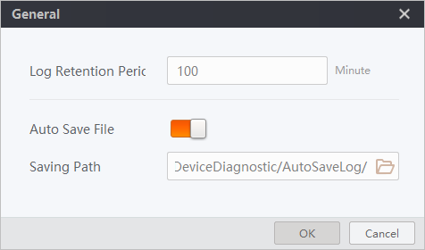
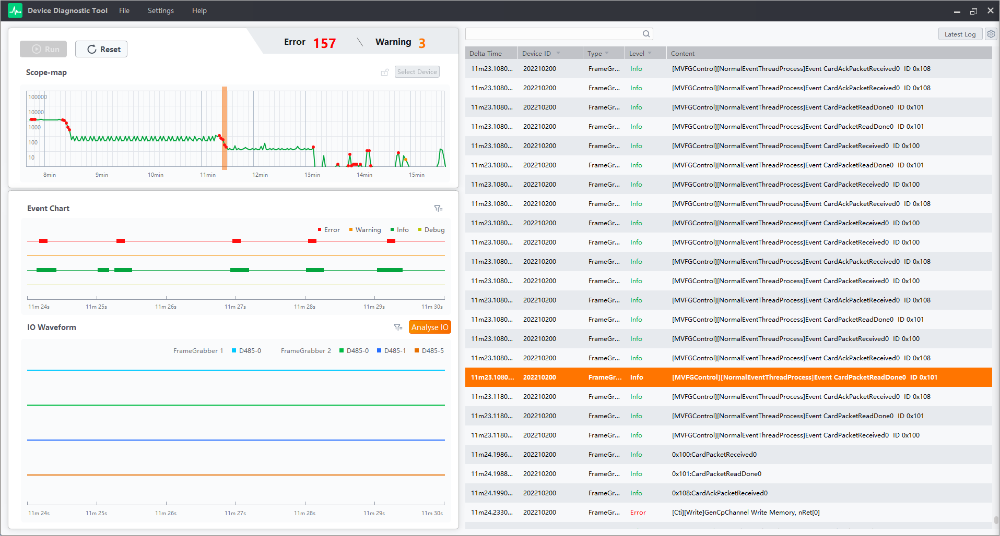
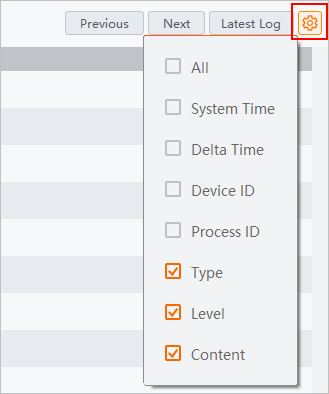

Log Management
After detecting frame grabber / camera events, the Tool can diagnose and accurately locate the abnormal logs in the log list. The tool can be used to monitor and analyze the abnormal events.
General Log Settings
You need to first set log retention period, whether to enable auto save, and auto saving path.
Click in the menu bar.
- Log Retention Period
-
Set the maximum log retention period as the upper limit of log time, which is in minutes. Logs exceeding the set time will not be displayed in the interface.
NoteThe parameter should be no more than 100 minutes.
- Auto Save File
-
Enable the parameter to automatically save log files to the set path.
NoteExporting log file is not allowed when Auto Save File is enabled.
- Saving Path
-
You can customize the path of log files. Click
 to set the path. If no path is selected, files will be saved to the
default path: (..\MVS\DeviceDiagnostic\AutoSaveLog).
to set the path. If no path is selected, files will be saved to the
default path: (..\MVS\DeviceDiagnostic\AutoSaveLog).

Figure 1 General SettingsLog Monitoring
You can monitor real-time log events of frame grabbers / cameras, filter logs, configure log titles, and view all log events within the log retention period.
To quickly locate the events on the scope map, you can click an abnormal event in the scope map, and the corresponding event in the log list can be highlighted (only when the selected "6 Second" event has one exception or warning).

Figure 2 View LogsYou can set the columns that will be displayed in the log list.
-
Customize the contents of log list: Click
 to customize the columns that
will be displayed in the log list. You can check the item(s) of interest to
set the contents.
to customize the columns that
will be displayed in the log list. You can check the item(s) of interest to
set the contents.
Figure 3 Customize Contents of Log List -
Filter log information: You can enter keywords, and click
 to filter logs. You can also
click Previous/Next to view
log information.
to filter logs. You can also
click Previous/Next to view
log information. -
View latest log: Click Latest Log to view the latest logs.